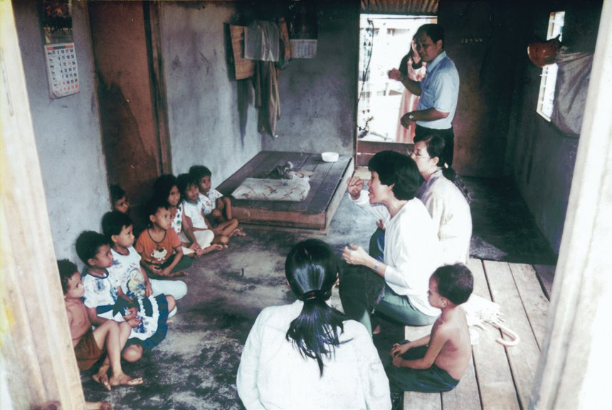
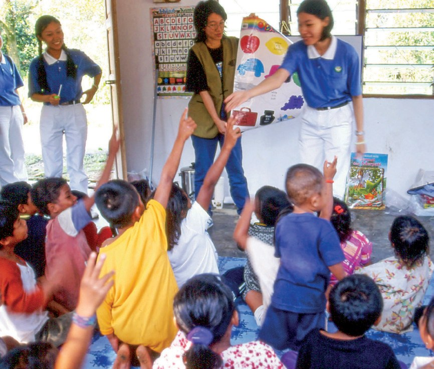
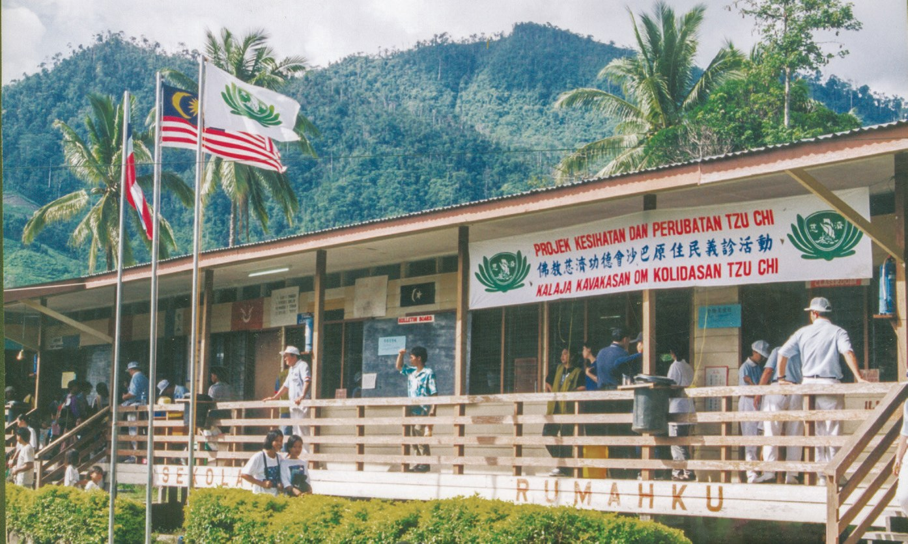
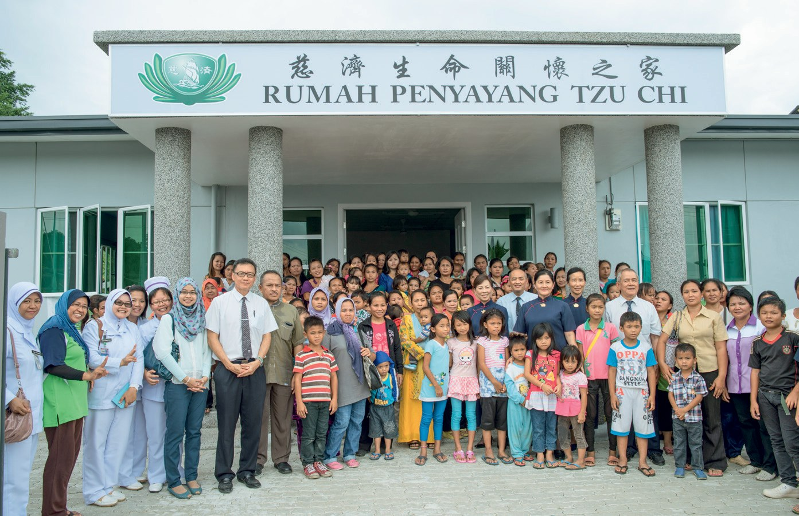
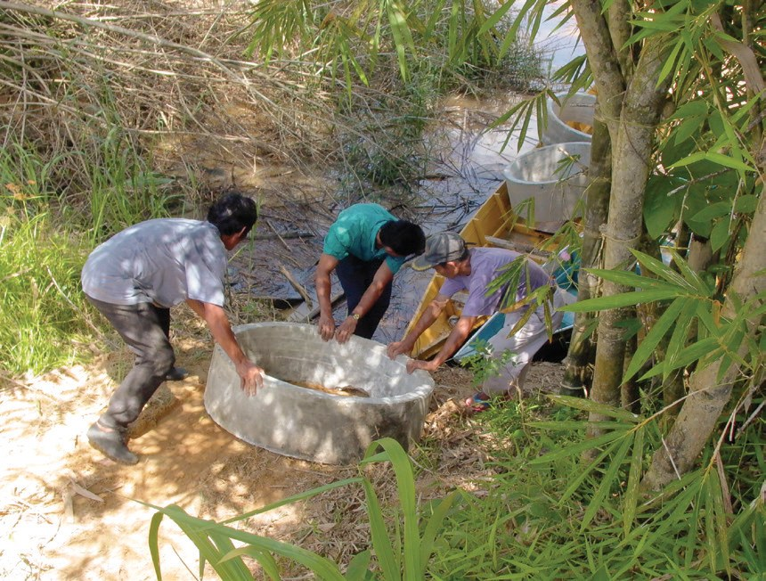
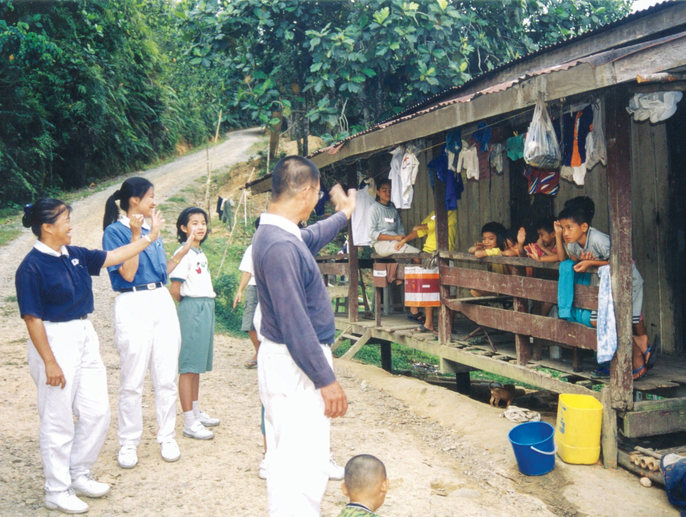
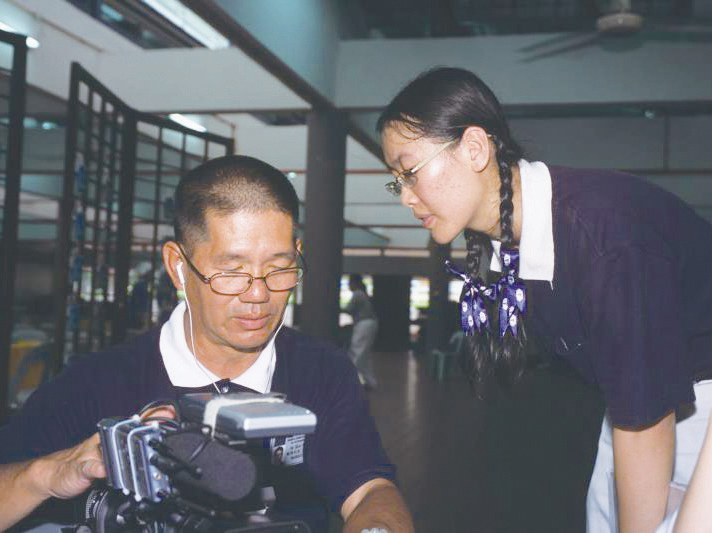
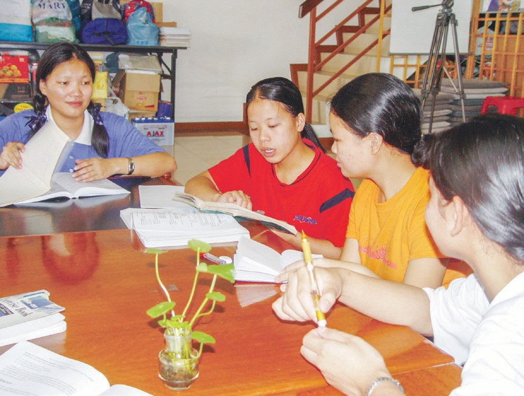
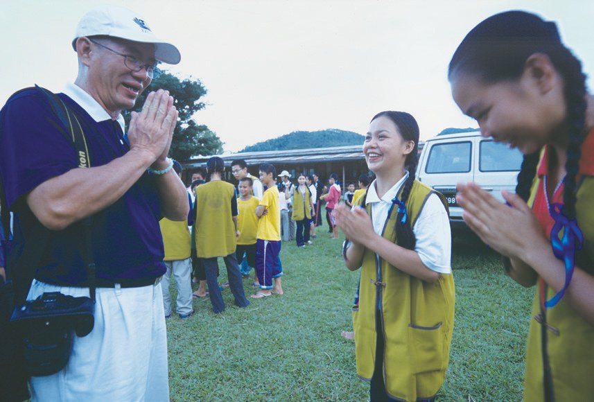

走入偏鄉
編織善緣
住在深山裡的孩子，要走多遠才到得了學校？

先別急著下結論，讀完再說說你的想法～
這一篇講慈濟走進原住民村落：從馬六甲的直望村，到沙巴深山的義診、待產之家和水井。
後半段是一群大學生，每次來回要坐五小時車，仍每月上山陪原住民孩子讀書。
下面是原書的節錄，紅色底線是我們替你標出的轉折點。
讀之前：你覺得幫助偏鄉，最先要給的是什麼？
全村只有一個孩子上學
慈濟第一次走進原住民村，看到了什麼？閱讀引導
東馬的原住民大多分布在山區，距離城市的醫院診所路途遙遠，面臨身患疾病，缺醫少藥的無奈，只能食用偏方或忍耐病苦。
原住民整體發展最嚴重的問題，是教育水平低落。
原文・p.1071995年，馬六甲慈濟志工走入直望原住民村給予關懷，這也是慈濟人首度走入原住民村落關懷。

志工發現當地環境髒亂，孩子們普遍沒有上學。離村裡最近的診所每個月僅兩天有醫生駐診，村民面對輕症多用草藥或土方治療，遇突發急症則束手無策。

只有兩天有醫生！
雖然村莊五公里外有一間小學，原住民事務局也安排校車負責載送，但全村只有一位小孩願意去學校。
原來是原住民學童被其他孩子排擠，加上大人也不瞭解讀書的重要性，認為農作缺乏人手，要孩子留在家中幫忙農務，讓這種「不讀書」的風氣持續蔓延。


原來是被排擠……
用擔架抬下山
沙巴深山裡生病了怎麼辦？慈濟在那裡辦了第一次義診。閱讀引導
在東馬沙巴亞庇深山的原住民部落，村民若需就醫，必須用擔架將病患抬到車能通行的山路，轉搭馬幣3.5令吉的小卡車，才能到達小鎮的診療所……

要先被人抬下山……
「在尊重生命的理念下，當地志工應盡量配合政府展開義診活動。」
上人慈示・p.111於是在與沙巴州政府研討後，促成1998年7月26日，慈濟在沙巴州哥打馬魯都甘榜蘭巴達國小，為當地原住民舉行首次義診。
- 17個原住民村的村民前來p.111
- 16位醫師參與p.111
- 近兩千位民眾受惠p.111

慈濟也因為義診活動因緣，發現哥打馬魯都的蘇愛達拉原住民村賴以出入的吊橋破舊不堪，慈濟遂承擔建設費用，與村民合力建造新橋，耗時十八天完成。

連一座橋也看見了？
2000年6月15日新吊橋啟用典禮，取名「慈濟大愛橋」，讓村民們對外通行上，更安全與便利。
慈濟得知他們的困境後，從2005年開始補助地中海貧血症患者的交通費和輸血過濾器，還補助醫院購買排鐵機，並與醫院合作舉辦捐血活動……
讓媽媽安全生孩子
比打士的難產、百淡的水源，志工一件一件去解決。閱讀引導
2002年，亞庇慈濟志工得悉比打士是沙巴第二赤貧，且蚊蟲病最嚴重，以及全國難產死亡率最高的地區之一……
希望能提供孕婦安全待產的地方，以降低山區孕婦因路途遙遠而無法即時就醫，導致難產死亡的風險。
先住下來等生產！
在鄭醫師及志工多次奔走下，待產之家於2003年7月正式掛牌，取名為「慈濟生命關懷之家」。

其中甘榜達拉馬士村沒有供應自來水，主要用水來自雨水或河水，但當地因山林開發導致失去乾淨水源，使村民健康倍受威脅。
確認地點後，志工遂啟動「以工代賑」，由村民負責挖井工作。同年6月，於村莊的天主教堂附近建置第一口水井，後再於其對岸造第二口水井。

以後也會自己顧吧。
五小時車程的課輔
住在木屋裡吃鹽巴飯的孩子，和一群上山陪讀的大學生。閱讀引導
木屋環境簡陋，孩子們需自行處理生活所需。因無水電，煮飯時只能依靠石頭跟鐵材圍成的火爐，食物則是米飯跟鹽巴；而洗衣、洗澡則到附近的河邊解決。
若遇農作歉收，得不到糧食，孩子們就無法返校，導致出席率低於百分之四十，嚴重影響課業進度。
還要自己走回家拿糧……

「你們大學生，能為原住民孩子做些什麼？」
志工歐陽記光對身旁的慈青說・p.121「原住民孩子雖然生活辛苦，卻沒有放棄上學，他們只希望有書可讀，所以我們可以幫他們加強課業輔導及培養學習動力。」
慈青梁慧敏想・p.121
得知每次活動需花五小時車程來回後，大多說要再考慮。但她沒有放棄，鍥而不捨地招募，直到2002年12月，有12位沙巴大學的學生響應。

她還是一個一個去找人！

「……當他們由大專青年進入社會後，會是一棵能為人遮蔭的大樹，而不是需要別人保護的小樹。」
歐陽記光・p.123一段時間耕耘後，孩子們衣著整潔，用餐時也會遵循飯前洗手，幫忙盛飯、分菜，先祈禱才用餐等用餐禮儀……
一個月後捎來佳音，希望之光女中宿舍生微妮和欣玲被沙巴大學錄取。……她們到大學就讀後，也成為慈青的一分子，持續關懷原住民的弟弟妹妹們。
猜一猜閱讀引導
2003年，蘭巴達國小32位寄宿生只有4位升學。到了2006年，寄宿生增至120位，有幾位升上中學？
「一天只要一令吉，一年三百六十五令吉，就能幫助孩子有書讀！」
新芽工程簡而有力的訴求・p.127就能讓一個孩子讀書！
用媽媽心愛孩子
一位跑遍深山的志工，陪著原住民孩子長大成人。閱讀引導
1998年，亞庇慈濟陸續前往原住民村落舉辦義診，歐陽記光積極投入，有時和其他幾位志工花了一個多月的時間，跑遍深山，才找到適合義診的地點……
聽聞孩子為了求學，住在學校附近的茅草屋，因為烹煮釀成火災而喪失性命的消息後，內心十分不捨，於是建議每個月都來關懷這群孩子。如今，這些原住民孩子長大成人，也成為別人的父母。

其中住在比打士的羅斯林，見許多家庭因新冠疫情影響而陷入困境，便主動購買糧食發放，幫助村民度過難關。她表示，這是從慈濟學到的助人模式。
現在自己去發放了！
多年來，志工歐陽記光秉持上人說「用媽媽心愛普天下的孩子」，把別人的孩子當做自己的孩子來愛，世上沒有教不好的孩子。
原文・p.129慈濟人在哪裡，哪個地方就可以撒播下愛的種子。
上人感恩地說・p.130停一停：誰讓你記住了？閱讀引導
選一位你印象最深的人。沒有標準答案。
有人問了一句話，有人把那句話變成行動。哪一位讓你最有感覺？

一起回頭看看吧～
回望
依本章原文整理，每一條都標了原書頁碼。閱讀引導
背後原因
為什麼要陪孩子讀書

小川已經發了物資，為什麼還要上山課輔？
- 教育低落
原住民整體發展最嚴重的問題，是教育水平低落。p.107
- 讀書好難
住木屋、吃鹽巴飯，出席率低於百分之四十。p.117
- 孩子陪伴孩子
慈青每月上山課輔，微妮和欣玲考上大學。p.122、p.126
後續發展
走進偏鄉一路走來

小禾從直望村到沙巴深山，走了多少年？
- 1995
首度走入直望原住民村。p.107
- 1998
沙巴原住民首次義診。p.111
- 2000
「慈濟大愛橋」啟用。p.112
- 2003
比打士生命關懷之家掛牌；慈青領養計劃開始。p.115、p.122
- 2005
補助地中海貧血患者。p.113
- 2007
甘榜達拉馬士以工代賑挖水井；新芽工程。p.116、p.127
一份關懷
一圈一圈擴散
小川一開始的義診，最後擴散到哪裡？
- 第一圈義診
1998年第一次義診，近兩千位民眾受惠。p.111
- 第二圈課輔
12位大學生響應，每月上山陪讀。p.122
- 第三圈升學
微妮和欣玲考上沙巴大學，也成為慈青。p.126
- 第四圈傳承
羅斯林在疫情中主動發放糧食。p.129
以上只整理本章寫到的事；書裡沒寫到的，我們不替它下結論。
回頭看讀前的選擇閱讀引導
書裡說原住民最嚴重的問題是教育水平低落（p.107），慈青每月上山課輔（p.122），後來真的有孩子考上大學（p.126）。可是一開始，志工也先辦義診、發物資。讀完之後，你覺得哪一樣最先？
大學生陪原住民孩子，誰學到的比較多？
只有你自己看得到喔！
準備好了就一起出發～